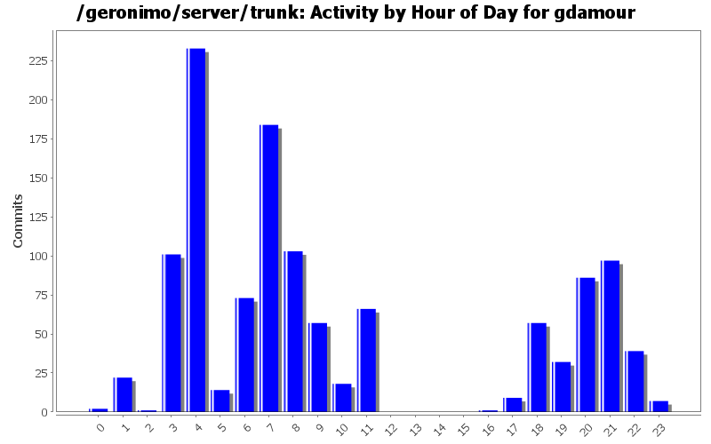
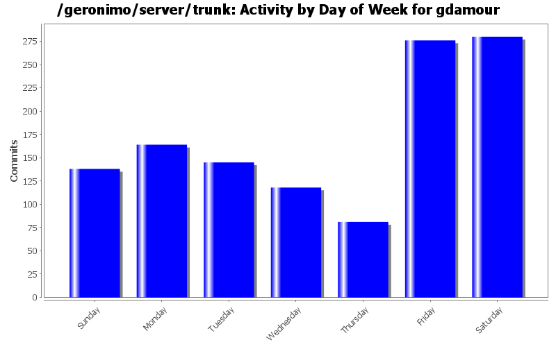
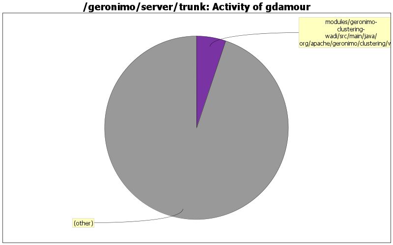

The previous attempt to fix the mod_jk integration had a limitation whereby the actual session Id, i.e. the value returned by HttpSession.getId(), was not including the jvmRoute. As a consequence, session stickiness was not properly working when the session Id was encoded in URLs, i.e. when cookies were turned off.
Integration tests with mod_jk have been conducted.
This fixes GERONIMO-4626 - Tomcat Clustering with WADI - JSESSIONID with jvmRoute to support mod_jk routing
106 lines of code changed in 6 files:
Strips and augments requested session IDs with a jvmRoute sets to the name of the processing node. Integration tests with mod_jk are yet to be conducted.
This fixes GERONIMO-4626 - Tomcat Clustering with WADI - JSESSIONID with jvmRoute to support mod_jk routing
63 lines of code changed in 8 files:
Fix build by removing few methods. EJB clustering has been broken and still need to be fixed
Should have been included as part of my previous commit.
1 lines of code changed in 1 file:
Fix build by removing few methods. EJB clustering has been broken and still need to be fixed
0 lines of code changed in 1 file:
Do not rename the actual module being deployed to prevent issues with JNDI resource reference resolutions which use the actual module name.
Name the master module, i.e. the module defining GBeans controlling the farmed module, X_G_MASTER where X is the name artifact id of the farmed module.
This resolves GERONIMO-4556 - Farm deployment of configurations using JNDI resource references does not work.
150 lines of code changed in 10 files:
Set system property 'activemq.geronimo.home.url' to the root server instance. This is more handy as this system property is used to locate the resource 'var/config/config-substitutions.properties' which is a per server instance resource.
3 lines of code changed in 1 file:
The naming scheme of EJB container has changed. Update accordingly the name of the default clustered stateful container
1 lines of code changed in 1 file:
Add persistence-jpa dependecy back as it was unintentionally removed
23 lines of code changed in 2 files:
Upgrade to WADI 2.1.1 to fix a replication issue when nodes are shutdown cleanly (versus crashed)
1 lines of code changed in 1 file:
When a session is invalidated, notifySessionDestruction does not need to be executed. We detect that a session has been invalidated by checking if it still exists or not
8 lines of code changed in 1 file:
move to WADI release 2.1
1 lines of code changed in 1 file:
Revert addition of private-classes element. Private classes can be
configured via scripts.
(GERONIMO-4403) Provide a mechanism to hide specific classes of a configuration to all its children
1 lines of code changed in 11 files:
Add private-classes element which allows specific classes to be hidden from all child configurations. In effect, they are private to the configuration.
(GERONIMO-4403) Provide a mechanism to hide specific classes of a configuration to all its children
449 lines of code changed in 37 files:
When a ConfigurationData is loaded from a ConfigurationStore, its dependencies are transformed through the execution of Groovy scripts matching the pattern Dependencies(.*).groovy located in the same directory than the configuration being loaded.
Also a ConfigurationDataTransformer gets attached to the ConfigurationData so that when GBeans are loaded subsequently when the Configuration ClassLoader is available they can be transformed through the execution of Groovy scripts matching the pattern GBeans(.*).groovy located in the same directory than the configuration being loaded.
(GERONIMO-4401) Extension of configuration dependencies and gbeans via Groovy scripts
1421 lines of code changed in 33 files:
GBeanInfo.getGBeanInfo should call the MultiGBeanInfoFactory so that the annotation GBean configuration style is attempted.
(GERONIMO-4399) GBean Annotations are not supported for GBeans declared in XML configuration
91 lines of code changed in 8 files:
Improvide error message and save dependency tree listing so that it is easier to refer back to it following a dependency change as per David J's advice.
(GERONIMO-4400) Improve error message of DependencyChangeMojo
48 lines of code changed in 1 file:
GERONIMO-4299 - Session invalidation problem - WADI Tomcat Clustering
Tomcat session has already been removed from its session manager when it is
invalidated. So when WADI calls back when the session it manages is destroyed,
the wrapping Tomcat session may already be unregistered.
15 lines of code changed in 2 files:
Should have been checked-in as part of my previous ci.
0 lines of code changed in 2 files:
Let's query based on the name and not the Artifact to distinguished between two clustered deployments within an EAR. Indeed, the Artifact was incorrect for WAR modules packaged within an EAR.
GERONIMO-4185 - Cannot deployed WADI clustered Jetty and Tomcat Web applications within an EAR
18 lines of code changed in 2 files:
Fix a classloader clash happening when a WADI clustered application is
deployed: Tribes classes were loaded by the configurations
org.apache.geronimo.configs/tomcat6//car and
org.apache.geronimo.configs/wadi-clustering//car and should only be loaded
by the wadi-clustering configuration.
Add a org.apache.geronimo.configs/tomcat6-no-ha//car configuration, which
imports org.apache.geronimo.configs/tomcat6//car and hides the Tribes classes.
When a WADI clustered application is built, the tomcat6 configuration is
removed from the clustered application ancestor list and replaced by
tomcat6-no-ha. Tribes classes are now loaded by wadi-clustering.
138 lines of code changed in 11 files:
(87 more)